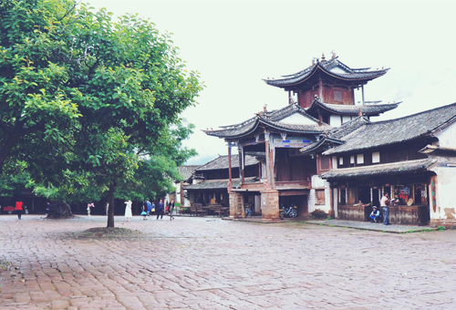

景点类型
- 热门
- 户外探险
- 古镇
- 少数民族
- 美食
香格里拉
素有“高山大花园”、“动植物王国”的美称。
大理古城
清一色青瓦屋面的建筑，寻找东方古韵。
玉龙雪山
离赤道最近的雪山群，北半球最南端的大雪山。
独龙江徒步
以曲折难行成为众多户外探险者的终极目标。
环洱海骑行
2天内轻松完成120公里的环海路线。
虎跳峡徒步
著名的初级徒步路线，多年来发展成熟。
丽江古城
宛如一位多面佳人，不同时刻展现不同风韵。
束河古镇
与丽江古城相比，这里更加幽静。

沙溪古镇
古镇古朴、安静而精致。
普洱西盟
西盟佤族曾有猎头祭天习俗。
版纳章朗村
千年历史的布朗族古村，深藏在雨林大山中。
维西同乐村
原始傈僳族村寨，是摄影师喜爱的外景地。
诺邓火腿
大山里的盐业小村，因舌尖上的中国而火。
建水烧豆腐
建水是云南名吃烧豆腐的重要根据地之一。
香格里拉松茸
7-9月去香格里拉不可错过的高原馈赠。
所有景点
- 全部
- 滇中
- 滇西北
- 滇南
- 滇东
滇中
- 昆明
- 石林
- 九乡风景区
- 斗南花卉市场
- 东川
- 抚仙湖
- 黑井
- 元谋
滇西北
- 大理古城
- 双廊
- 鸡足山
- 巍山
- 洱源
- 沙溪
- 丽江古城
- 束河古镇
- 虎跳峡
- 玉龙雪山
- 老君山
- 泸沽湖
- 独克宗古城
- 松赞林寺
- 普达措国家公园
- 尼汝
- 飞来寺
- 明永冰川
- 雨崩
- 茨中教堂
- 维西
- 独龙江乡
- 丙中洛
滇南
- 腾冲
- 和顺
- 芒市
- 瑞丽
- 临沧
- 景洪
- 中科院植物园
- 勐腊
- 孟连
- 西盟
- 澜沧
滇东
- 元阳梯田
- 建水
- 蒙自
- 普者黑
- 坝美
- 邵通大山包
- 罗平
- 会泽
- 陆良